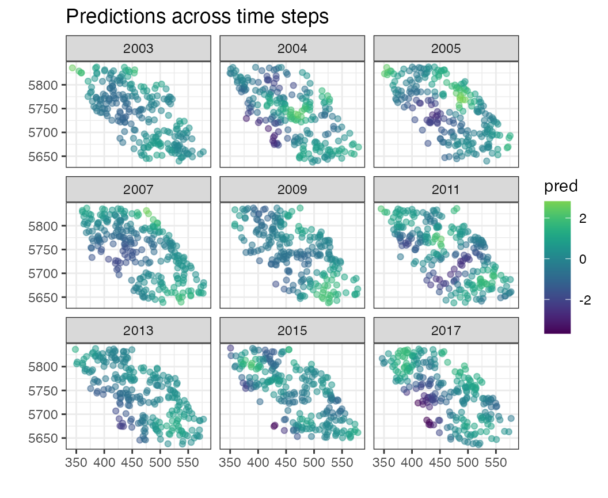
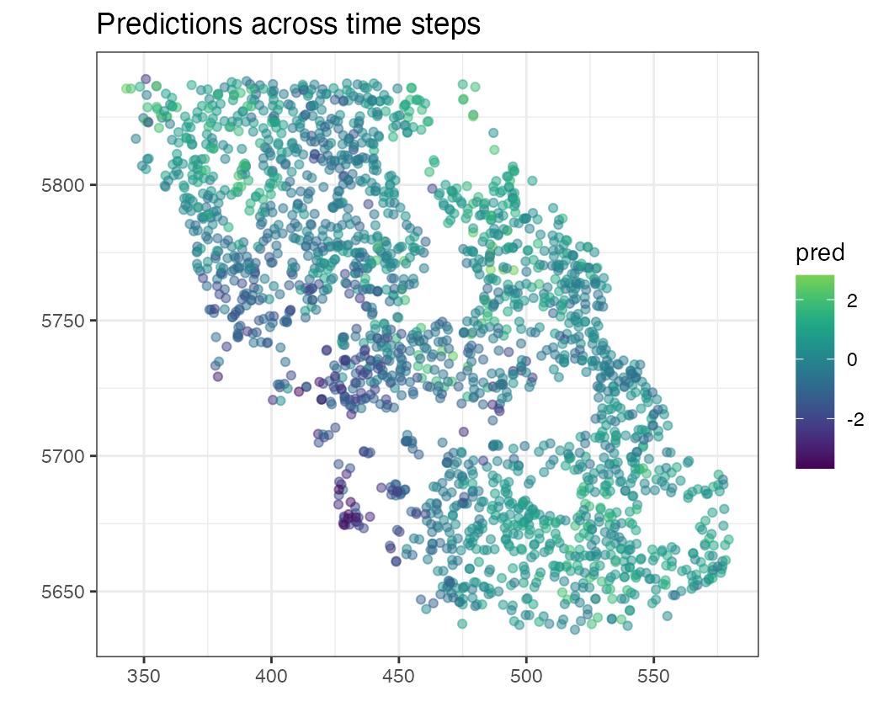
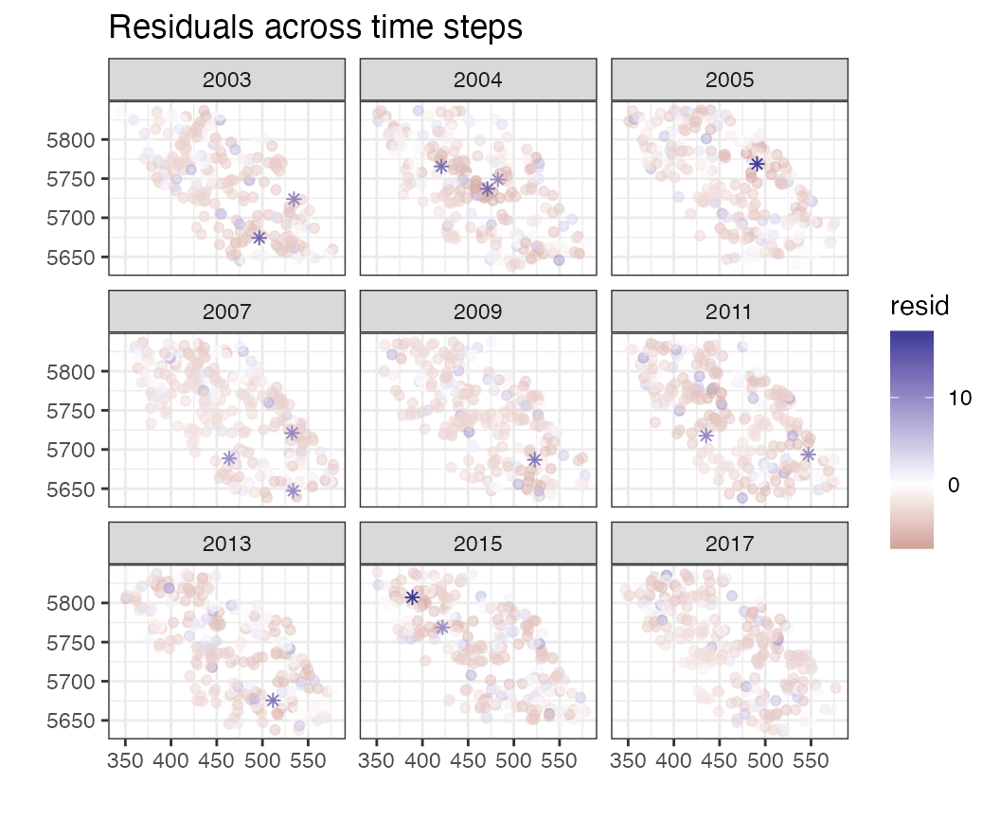

Plotting spatial residuals
2022-06-17
Source:vignettes/a02_spatial_residuals.Rmd
a02_spatial_residuals.RmdHere we will use the vista package to display spatial residuals from spatiotemporal models
GAM with spatial smooths by year
We’ll use a GAM for demonstration purposes, but any other package
randomForest, sdmTMB, etc. could be used
instead.
Predictions in space
The pred_space function plots predictions spatially. By
default, removes temporal means so the predictions in each time slice
have mean 0. By default, the predictions are faceted by time,
pred_space(df = pcod, time = "year")
But we can also turn off faceting using by_time
pred_space(df = pcod, time = "year", by_time = FALSE)
Residuals in space
Similarly, the resid_space function is designed to plot
spatial residuals (again these have mean 0). And faceting can be turned
on / off, but by default by_time = TRUE.
resid_space(df = pcod, time = "year")
QQ plot spatially
The qq_space function is also useful in displaying the
quantile residuals (via a call to stats::qqnorm)
qq_space(pcod, time = "year")